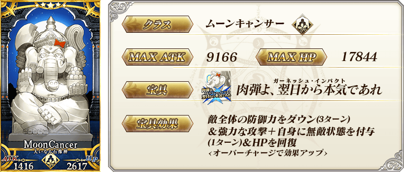
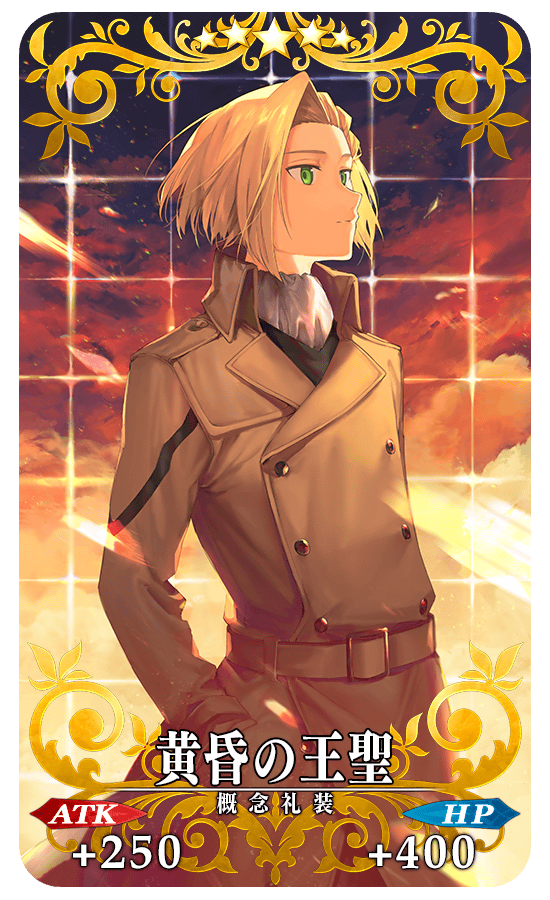
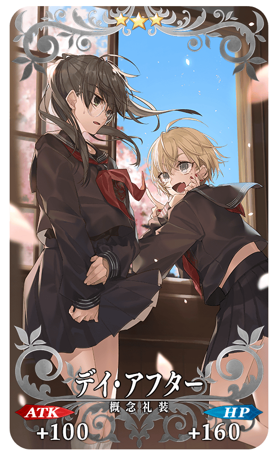
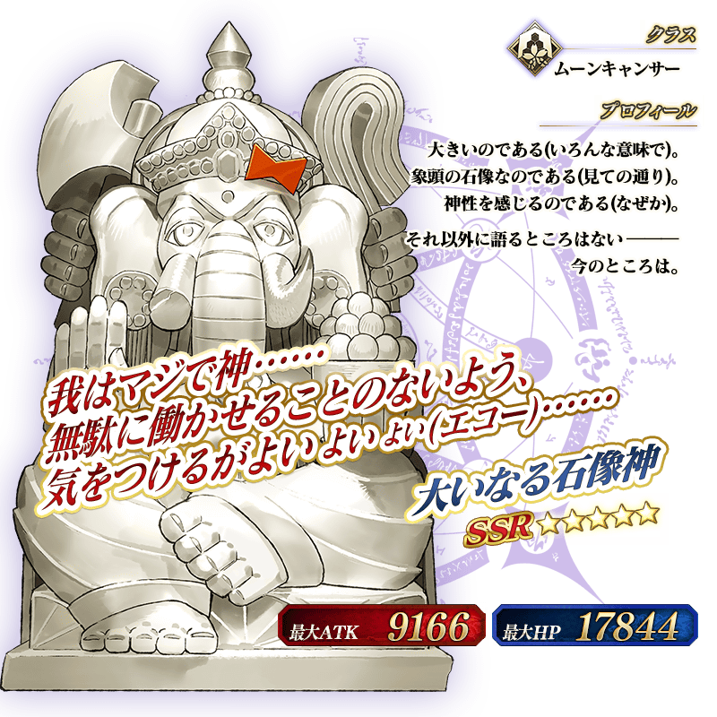
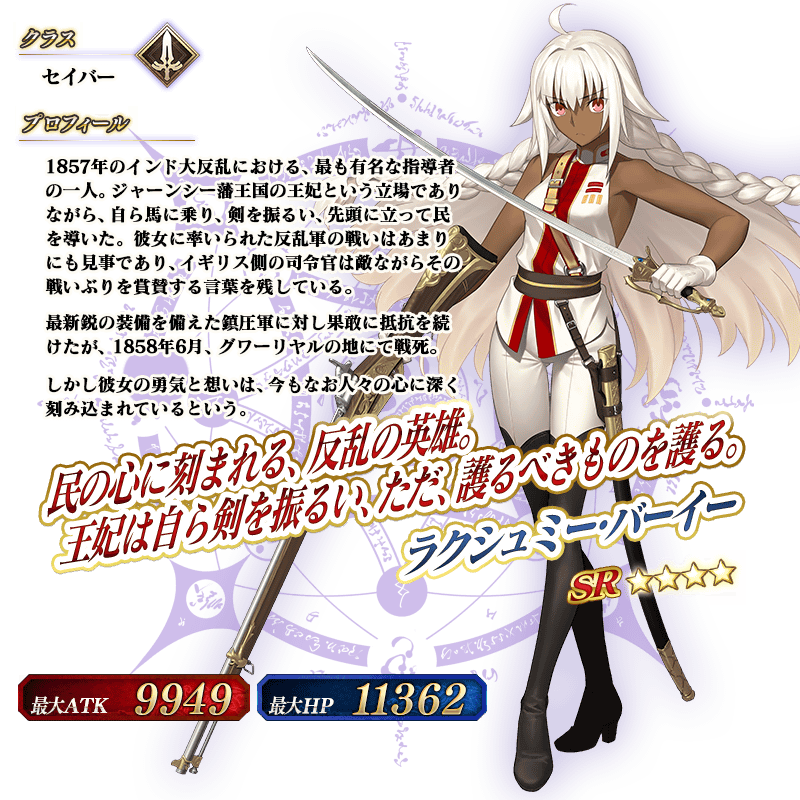
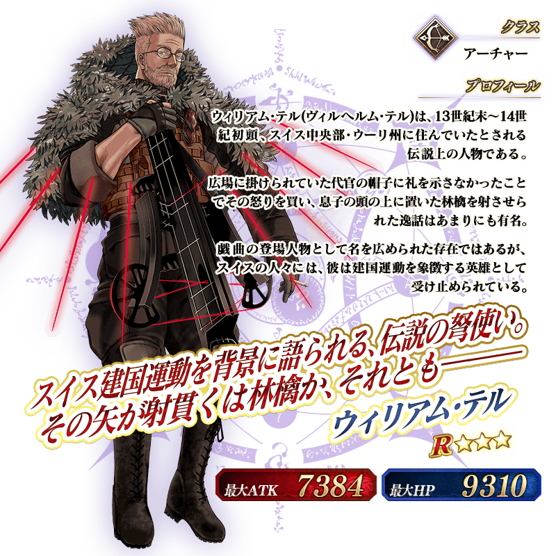

◆「宇迦淨土Pick Up召喚」期間◆
期間:2019年6月15日(六) 20:00～6月29日(六) 11:59
為了記念第2部 第4章「Lostbelt No.4 創世滅亡輪廻 宇迦淨土 黑色最終之神」的開幕，舉辦期間限定「宇迦淨土Pick Up召喚」！ ※未通過第2部 第4章「Lostbelt No.4 創世滅亡輪廻 宇迦淨土 黑色最終之神」的狀態也能進行「宇迦淨土Pick Up召喚」。
來自第2部 第4章「Lostbelt No.4 創世滅亡輪廻 宇迦淨土 黑色最終之神」，「★5(SSR)偉大石像神」「★4(SR)拉克什米・芭伊」「★3(R)威廉・泰爾」新登場！
這次是上述3位從者Pick Up！
詳情請在聖晶石召喚畫面左下的召喚詳細確認。
「★5(SSR)黄昏の王聖」「★4(SR)ラ・フォリア」「★3(R)デイ・アフター」也做為新概念禮裝先行新登場！
並且，★3(R)概念禮裝的陣容一部份翻新！
◆有關從者的注意◆
※「★5(SSR)偉大石像神」「★4(SR)拉克什米・芭伊」「★3(R)威廉・泰爾」自Pick Up期間結束後的2019年6月29日(六) 12:00，會追加到故事召喚。
※「★3(R)威廉・泰爾」自Pick Up期間結束後的2019年6月29日(六) 12:00，也會追加到友情點數召喚。
◆有關概念禮裝的注意◆
※「★5(SSR)黄昏の王聖」「★4(SR)ラ・フォリア」「★3(R)デイ・アフター」自Pick Up期間結束後的2019年6月29日(六) 12:00，會追加到故事召喚。
※隨著翻新「★3(R)叡智の光」於本Pick Up召喚為召喚對象外。
※2019年6月29日(六) 12:00以後「★3(R)叡智の光」也不會從故事召喚被抽出，追加至友情點數召喚。
Pick Up期間中，新登場從者的出現機率提升！
10次召喚中確定1張★4(SR)以上和確定1位★3(R)以上的從者！ ※確定★4(SR)以上包含從者和概念禮裝。 ※本頁面皆為開發中圖片。會有與實際圖片相異的情況。




 ※上述「★3(R)威廉・泰爾」的卡面為靈基再臨第2階段。
※上述「★3(R)威廉・泰爾」的卡面為靈基再臨第2階段。
|  |
★★★★★SSR |
|
★★★★SR |
|  |
★★★R |


 ※上述「★3(R)威廉・泰爾」的立繪為靈基再臨第2階段。
介紹「★5(SSR)偉大石像神」「★4(SR)拉克什米・芭伊」「★3(R)威廉・泰爾」的寶具演出！
在「Fate/Grand Order」官方網站內的公告中，以影片公開寶具演出，敬請確認。
其他還有，關於主線關卡第2部 第4章「Lostbelt No.4 創世滅亡輪廻 宇迦淨土 黑色最終之神」和「Lostbelt No.4 創世滅亡輪廻 宇迦淨土 黑色最終之神」開幕前夕宣傳活動的詳情，請自下述橫幅確認。
■「Lostbelt No.4 創世滅亡輪廻 宇迦淨土 黑色最終之神」詳細情報

■「Lostbelt No.4 創世滅亡輪廻 宇迦淨土 黑色最終之神」開幕前夕宣傳活動詳細情報